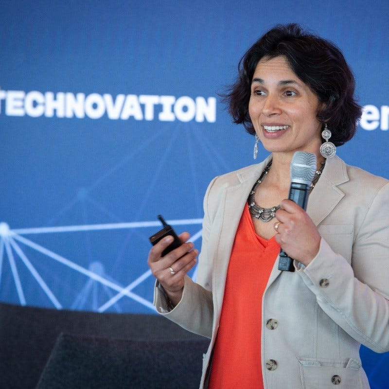

Bienvenida
Explora iniciativas tecnológicas lideradas por mujeres. Aprende, conecta e inspírate.
Proyectos Destacados
Conoce plataformas, aplicaciones y programas educativos creados por y para mujeres.

Girls Who Code
Es una organización sin fines de lucro que busca reducir la brecha de género en tecnología, formando a mujeres jóvenes y personas no binarias en habilidades informáticas, su objetivo es aumentar la presencia femenina en informática y STEM.
Leer más
Fundadora: Reshma Saujani.

Laboratoria (Latinoamérica)
Laboratoria es una organización de impacto social que busca empoderar a mujeres en Latinoamérica a través de la educación en tecnología. Su objetivo es construir una economía digital más diversa e inclusiva, brindando a las mujeres la oportunidad de desarrollarse profesionalmente en el sector tecnológico.
Leer más
Fundadora: Mariana Costa Checa.

Black Girls Code
Es una organización sin fines de lucro que se enfoca en empoderar a niñas y jóvenes negros y de otras minorías raciales a través de la educación en informática y tecnología. Su objetivo es cerrar la brecha de género y racial en la industria tecnológica, promoviendo la diversidad y la inclusión. BGC ofrece talleres, programas extraescolares y de verano donde las niñas aprenden a codificar, desarrollar aplicaciones móviles, robótica y otras tecnologías.
Leer más
Fundadora: Kimberly Bryant.

Technovation Girls
Es un programa global que empodera a niñas y jóvenes (de 8 a 18 años) para que se conviertan en emprendedoras y líderes tecnológicas. A través de este programa, las niñas aprenden a resolver problemas de su comunidad utilizando la tecnología, desarrollando aplicaciones o soluciones basadas en IA, y creando un plan de negocios
Leer más
Fundadora: Tara Chklovski.

Clue
Es una aplicación de salud femenina, específicamente diseñada para el seguimiento del ciclo menstrual, salud reproductiva y embarazo.
Leer más
Fundadora: Ida Tin.
Peppy
Es una plataforma de salud digital y beneficios para empleados que se enfoca en proporcionar apoyo holístico para la salud, el bienestar y el desarrollo personal de los empleados, especialmente en áreas como la salud.
Leer más
Fundadora: Mridula Pore, Evan Harris y Max Landry.
Mujeres TIC
Es un programa que promueve el liderazgo femenino mediante una oferta de capacitación virtual, gratuita y certificable para todas las mujeres de Colombia.
Leer más
Fundadora: MinTic.
Comunidades y Redes
Organizaciones y grupos de apoyo para mujeres en el mundo tech.
Datos e Impacto
Estadísticas sobre participación femenina en ciencia y tecnología.
Visualizaciones
Gráficas que muestran el avance de mujeres en áreas STEM y emprendimientos tecnológicos.
Formulario de Participación
¿Tienes un proyecto o deseas unirte? Cuéntanos más.